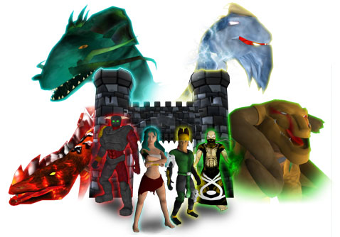

Het ontstaan van de Draken
Dragon Master Spell Caster speelt zich af in de magische wereld van Nakihar. Deze magie wereld werd ooit geregeerd door de Draken Meesters. De Draken, ontstaan uit de meest krachtige elementen; de macht van de Aarde; de onweerstaanbare kracht van het Water; de brandende intensiteit van het Vuur en de explosieve energie van de Storm, waren de bron van alle magie. Alle Draken werden uit de Draken Meesters geboren. Nadat de verwanten er waren verdwenen de Meesters naar hun elementen.
De verbanning van de Draken
Het aanbreken van de tijd der mensen markeerde het einde van de heerschappij van de Draken. De Draken; niet te temmen, onbevreesd en dodelijk, vochten tegen de heerschappij van de mensen. Mensen, de meest sluwe van alle rassen, gebruikten de magie van de Draken tegen de Draken zelf. Met behulp van de krachten van de Aarde, Water, Vuur en Storm verdreven de mensen de Draken naar de grote, onbewoonbare ijsvlaktes.
De mensen, bezorgd over de krachten die ze ontdekt hadden, verborgen de kennis om de Draken te beheersen in vier Boeken. Deze machtige boeken werden aan de vier belangrijkste koninkrijken van Nakiha toevertrouwd. Het Boek van de Klauw, met de magie van de Storm, werd bewaakt door het rijke koninkrijk van Arkhoniar. Het Boek van de Vlam, met de magie van het Vuur, ging naar het zuster koninkrijk van Daeroviar. Het Boek van de Schub, met de magie van het Water, verdween naar het enorme koninkrijk van Serengania. Ten slotte, het Boek van het Bot, met daarin de magie van de Aarde, werd bewaakt door het wijze koninkrijk van Andera.